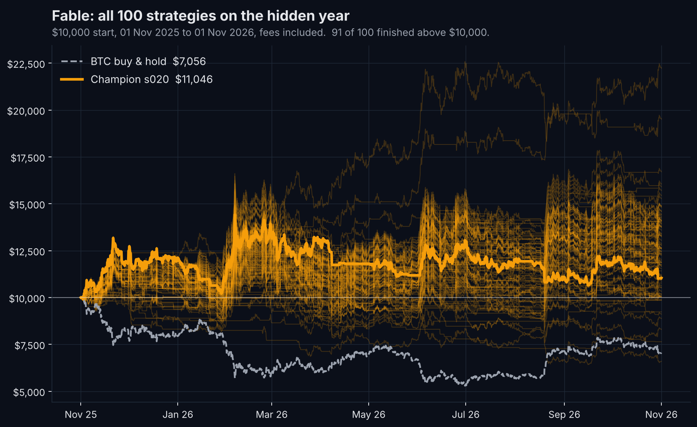
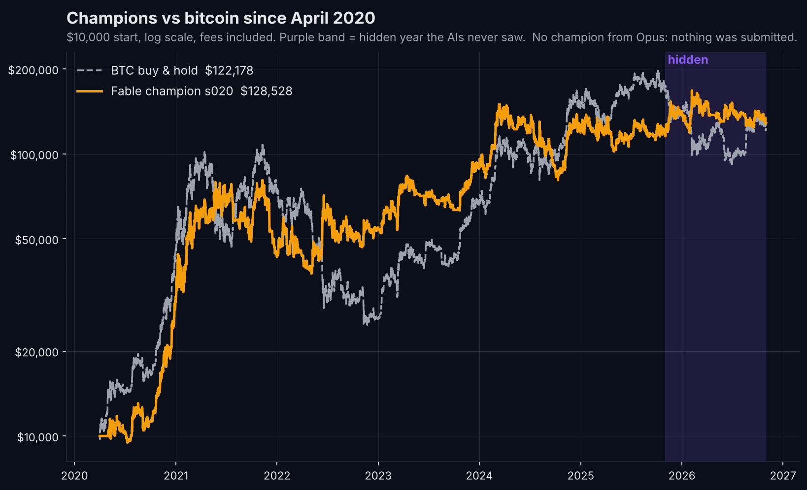

Scoreboard
The pass rules were fixed before any strategy was scored. Opus has no column of results because its folder is empty: no strategies were built in any session or branch of this repository.
All 100 strategies in the hidden year

Each thin line is one strategy starting with $10,000. Thick line: the champion. Dashed grey: holding bitcoin.
91 of 100 strategies ended above $10,000 and 99 beat holding bitcoin. Most of these rules can bet on falling prices, and the hidden year was a falling market, so this result says less than it seems to. The luck check further down is the fairer test.
Past results did not predict the hidden year
Each dot is one strategy. If a good score on the old data meant a good score on new data, the dots would climb from bottom left to top right. They do not: the rank link is −0.03, where 0 means no link at all.
Sharpe in the hidden year
−2.0−1.5−1.0−0.50.00.51.01.52.02.50.40.60.81.01.21.4s020 picked as champions023 best in the hidden year
Sharpe before the hidden year (what the AI could see)
What Fable picked+10.5%
s020 Momentum vote 30/60/90/120d
Ranked 9 of 100 before the hidden year, 75 of 100 in it. Worst dip −26.2%, 33 trades.
What it should have picked+95.1%
s023 MACD line and histogram agreement
Ranked 85 of 100 before the hidden year, 1 of 100 in it. Worst dip −16.5%, 21 trades. Nothing in the old data pointed to it.
The champion under stress
Tweak the settings
✕ Fail
Each setting moved 20% down or up, one at a time. 7 of 8 versions still made money.
champion as submitted (+10.5%)
Higher fees
✓ Pass
The same hidden year with trading costs removed, doubled and tripled.
Worst case
✕ Fail
The champion's 33 hidden-year trades, reshuffled 1,000 times.
Luck check
✕ Fail
Every strategy against 1,000 random twins: same trades, same direction, same length, random timing.
1
2
1
1
3
3
10
5
17
16
15
9
10
7
95% neededchampion 70%0%25%50%75%100%
Share of random twins the strategy beat
The champion beat 70% of its twins. That is better than a coin flip but short of the 95% needed to call it skill. The typical strategy beat 78%, and only 7 of 100 cleared the bar.
Best ten in the hidden year
By family
Sharpe is return per unit of bumpiness: above 1 is good, near 0 is nothing. The champion sits at rank 75, so it is not in this table.
Since April 2020

$10,000 start, log scale. The shaded band is the hidden year.
Did anybody cheat?
- ✓ Clean
fable/backtest.py and opus/backtest.py are byte-identicalidentical
- ✓ Clean
in-sample CSVs are byte-identical (12,240 candles, last 2025-10-31 20:00)identical; 12,240 candles; last candle 2025-10-31 20:00:00+00:00
- ✓ Clean
Fable: no strategy mentions "hidden", opens files or uses the network100 files scanned, 0 flagged
- ✓ Clean
Fable: snapshot's backtest.py and in-sample CSV equal the ones in fable/identical
- ! Problem
Fable: session logs show no peekinglog folder does not exist on this machine - the session cannot be verified here
- ! Problem
Opus: no strategy mentions "hidden", opens files or uses the networkno strategy files submitted - nothing to check
- ! Problem
Opus: session logs show no peekinglog folder does not exist on this machine - the session cannot be verified here
The session logs the spec asks for are not on this machine, because Fable's strategies were built in a separate cloud session. As a substitute, all 38 tool calls of that session were read through the session history. What they show:
- No access to the hidden file. No command or path touches
hidden/, there are no web requests, no downloads and no dates after October 2025. The only price file read was the in-sample one.
- The folder lock did not apply. The session started in the project root instead of inside
fable/. It listed every file name in the repository, so it saw that hidden/ exists, and it called one connector tool that only lists folder names.
- The hidden year is not fully unknown to the AI. Its own FINAL.md says its training data runs past October 2025 and that it has a rough idea how bitcoin moved afterwards. It never saw the hidden candles, but that background knowledge cannot be ruled out as an influence.
- This exam session also built the exam room, downloaded the hidden file, and started a Fable build of its own that was interrupted. None of that work was used: the 100 scored strategies come byte for byte from the other session's commit.
Is the engine right?
2 of 5 reference numbers match exactly. The rest could not be matched by changing code. The likely cause is the price feed: on 2026-07-10 the Binance close stopped 0.01% (about $7) short of the line where Rule B flips. Treat that one candle as crossed and Rule B gives +26.56% with 26 trades, against the reference +26.15% and 26.
Full numbers: exam/RESULTS.md, exam/out/scores_fable.csv. Re-run with python exam/run_exam.py.